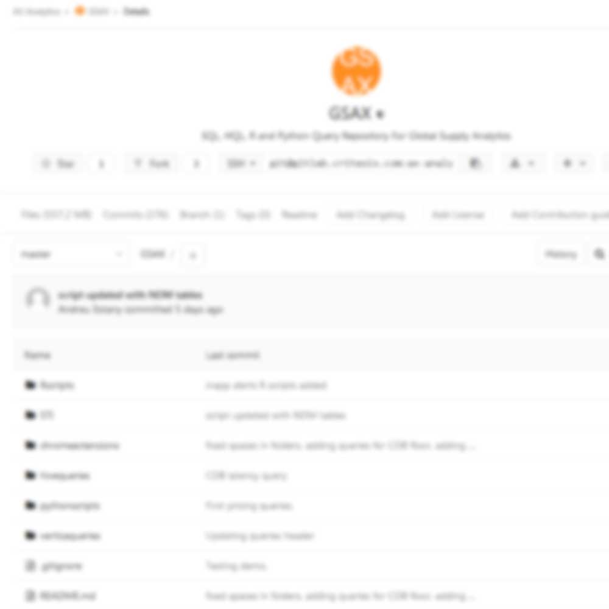
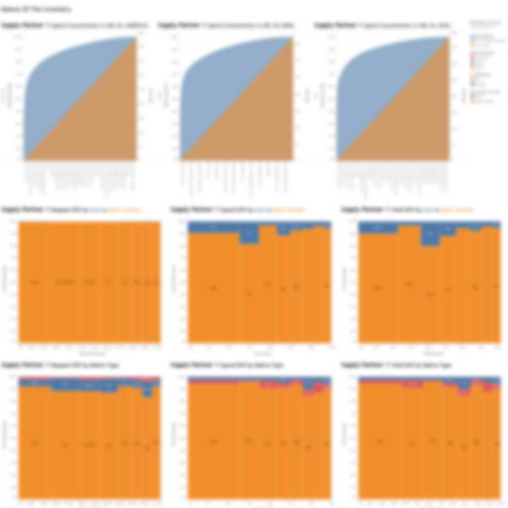
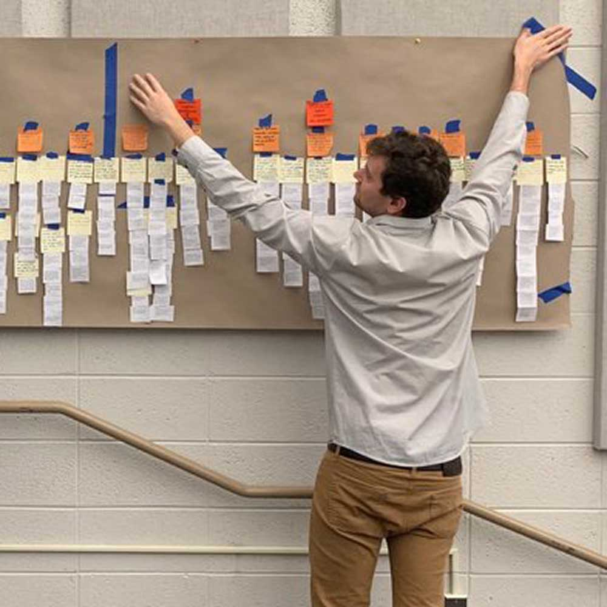
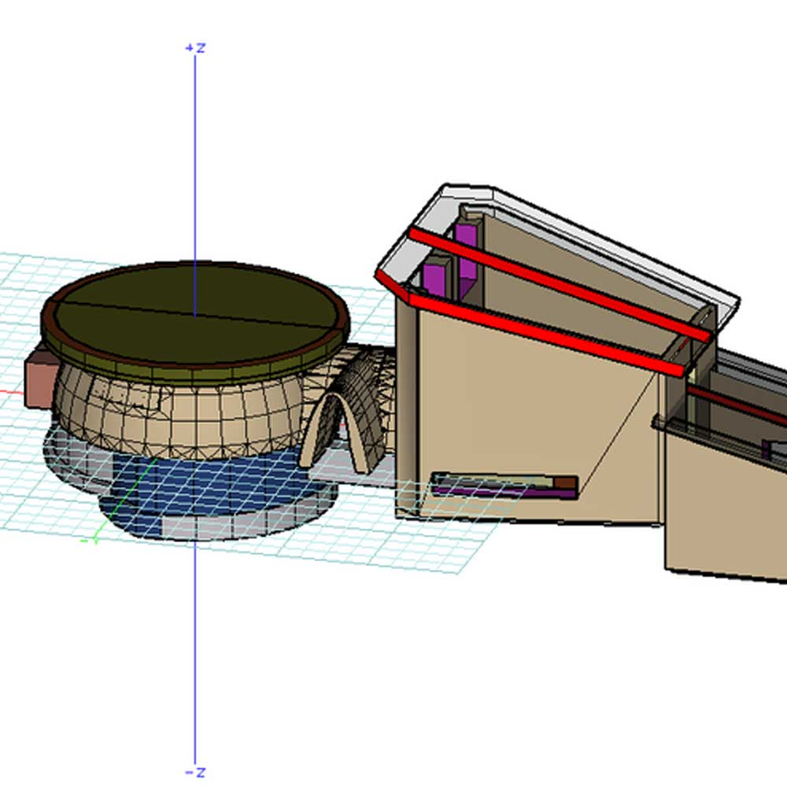
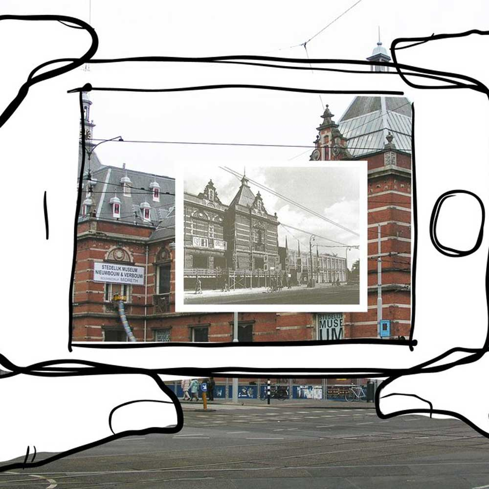
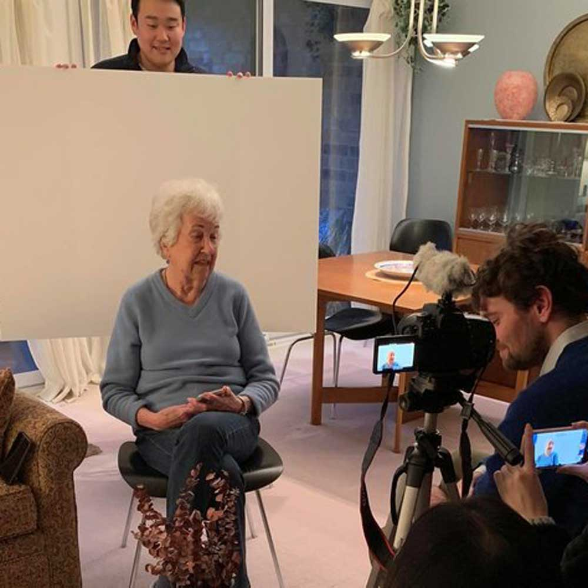
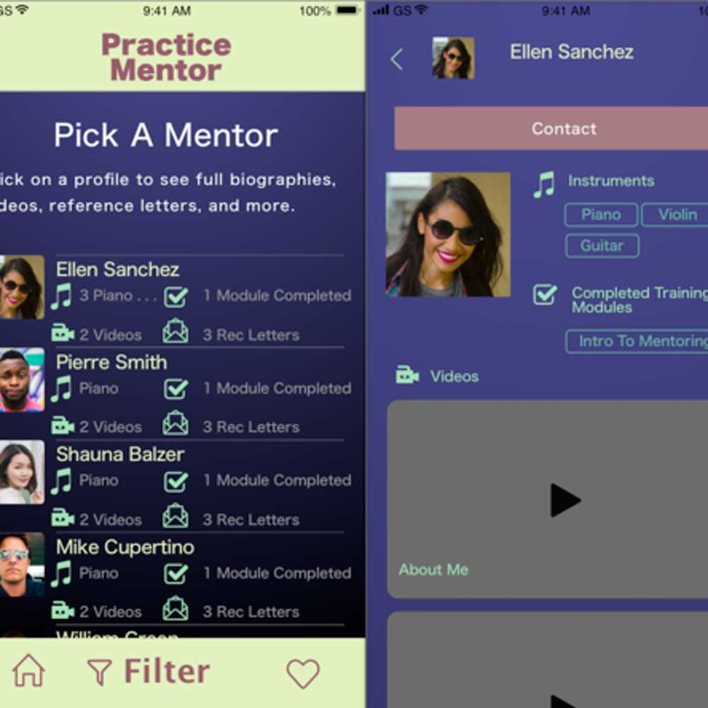
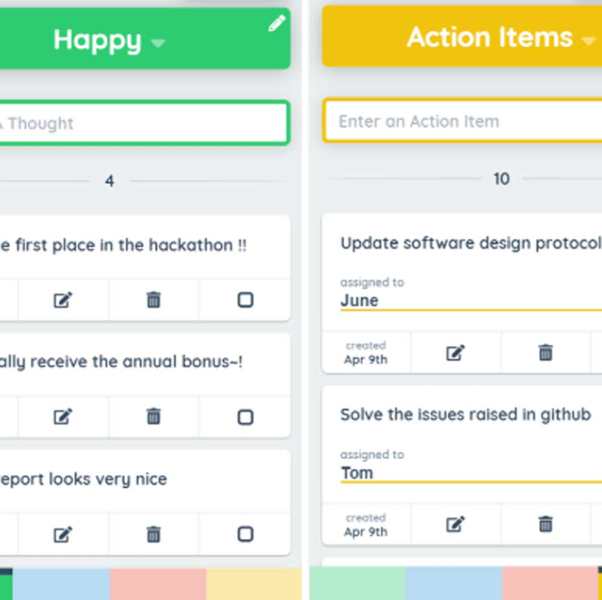

Skip to Main Content
Home
Projects
My Top Project
Contact
Projects
Projects from my career and academics

A git repository I made to store queries for my analytics team at Criteo.

Tableau dashboards I made at Criteo for supply analytics.

Contextual inquiry project to optimize food bank sorting.

House I designed in undergraduate architecture class.

Article that I wrote for the New York Times about UX of smartphone apps.

An app our team designed to combat senior loneliness.

An app I designed to pair young students learning instruments with neighborhood mentors.
A lab I led for a new product at Quantcast.

A needs assessment I conducted for Ford Labs on agile retrospective software.